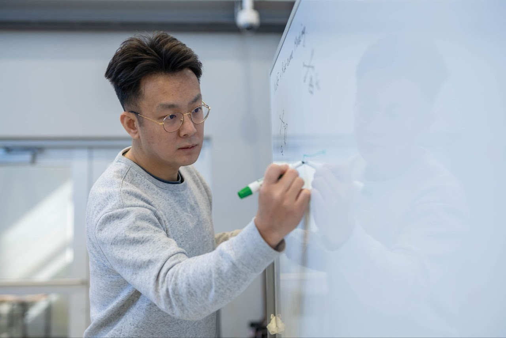
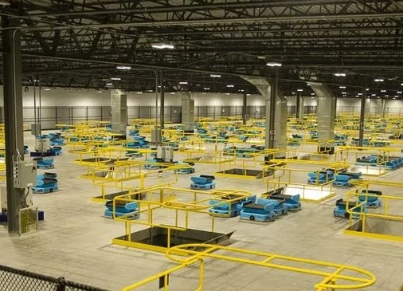
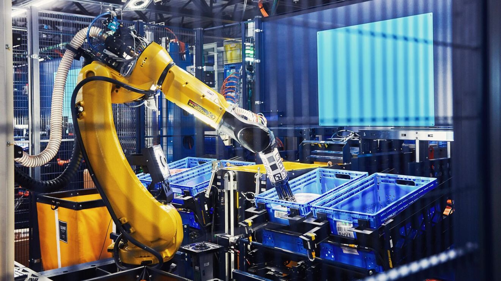
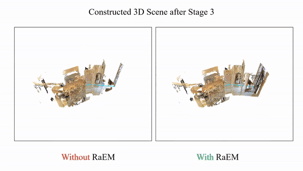
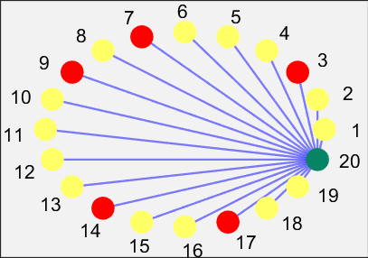
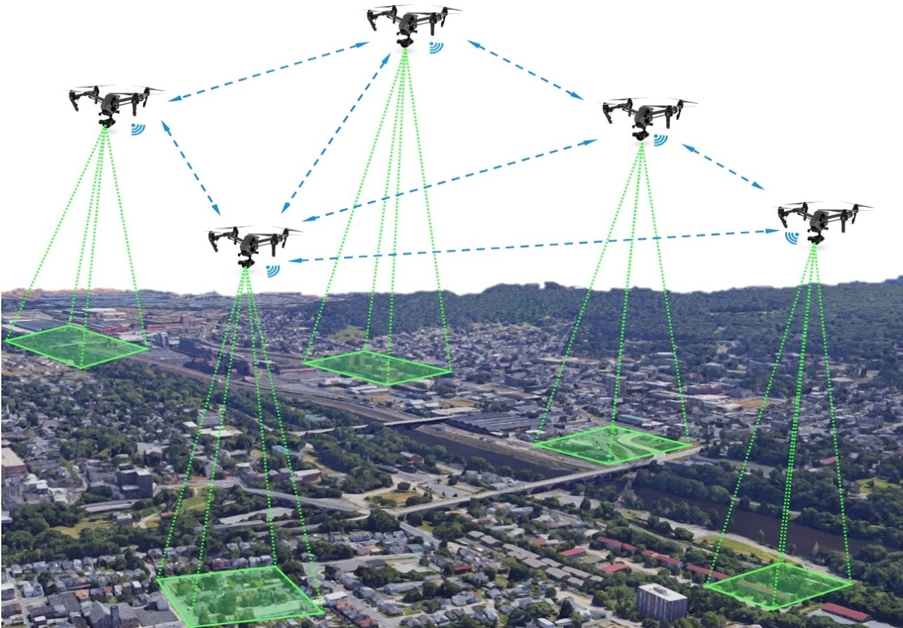

|
Guangyi Liu
|
 |
Guangyi Liu
Postdoctoral Research Scientist
Amazon Robotics
Email: gliu[at]lehigh.edu | Google Scholar
|
Welcome
Hi, welcome to my website! I am currently a Postdoctoral Research Scientist at Amazon Robotics.
I obtained my Ph.D. at the Autonomous and Intelligent Robotics (AIR) Laboratory, Department of Mechanical Engineering, Lehigh University, working under the advisory of Prof. Nader Motee.
Before joining Lehigh, I obtained my B.E. degree at Beijing Institute of Technology.
My research interests are risk and robustness analysis in networked control systems and perception systems.
I served as a workshop organizer in ACC 2023 and organized five invited sessions at ACC 2023 - 2026.
Education
Ph.D. in Mechanical Engineering, Lehigh University, 2024
M.S. in Mechanical Engineering, Lehigh University, 2018
B.E. in Aircraft Design and Engineering, Beijing Institute of Technology, 2016
Media
Recent News
(1/31/2026) Our recent work Active Next-Best-View Optimization for Risk-Averse Path Planning (paper) was accepted at ICRA 2026!
(1/18/2026) Our invited session on “Autonomous Risk-Aware Perception, Planning, and Control”, co-organized with Na Li, Ufuk Topcu, Michael M. Zavlanos, and Nader Motee was accepted at ACC 2026!
Selected Research Areas
|
 |
Distributionally Robust Multi-Agent Reinforcement Learning for Dynamic Chute Mapping (Paper: C13)
We propose a Distributionally Robust Multi-Agent Reinforcement Learning (DRMARL) framework for destination-to-chute mapping in Amazon Robotics warehouses, designed to handle uncertain and dynamic package induction rates. DRMARL integrates group distributionally robust optimization (DRO) with a contextual bandit-based predictor to improve learning efficiency and ensure robust chute mapping under varying induction conditions.
|
|
 |
Multi-Objective Reinforcement Learning for Warehouse Optimization and Resource Allocation (Paper: P5)
We develop a Multi-Objective RL framework for large-scale tote consolidation in human-robot fulfillment centers that balances competing objectives like throughput, space utilization, and capacity constraints. Using best-response versus no-regret game dynamics, our approach learns policies that trade off multiple KPIs without manual weight tuning. We provide theoretical guarantees for extracting feasible policies and demonstrate strong performance on realistic warehouse simulations.
|
|
 |
Beyond Uncertainty: Risk-Aware Active View Acquisition for Safe Robot Navigation and 3D Scene Understanding with FisherRF (Paper: C12, C14)
We introduce a novel approach to enhance robot navigation safety and improve 3D scene understanding by extending beyond conventional uncertainty-based methods.
|
|
 |
Risk Analysis and Mitigation of Cascading Failures in Networked Control Systems (Papers: J1-J2 C3-C6, C8-C9)
We develop comprehensive frameworks to analyze and mitigate cascading failures across diverse networked control systems, including autonomous vehicle networks and power grids. Our work quantifies how initial failures propagate through networks under communication delays and input uncertainties, revealing fundamental trade-offs between system performance and cascading risk. We introduce data-driven distributionally robust control methods that actively mitigate cascading risks while satisfying probabilistic safety constraints, applicable to multi-agent systems and wide-area control of power networks.
|
|
 |
Robust Analysis of Multi-agent Map Classification with RNN (Papers: C1-C2, P1 - P4)
For a given stable recurrent neural network (RNN) that is trained to perform a classification task using sequential inputs, we quantify explicit robustness bounds as a function of trainable weight matrices.
|
|